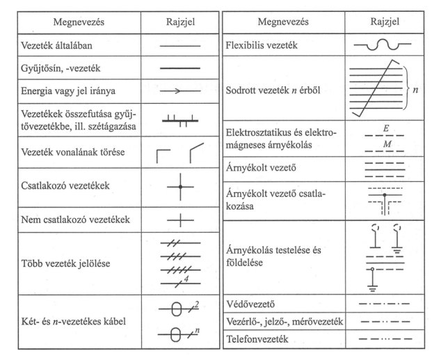
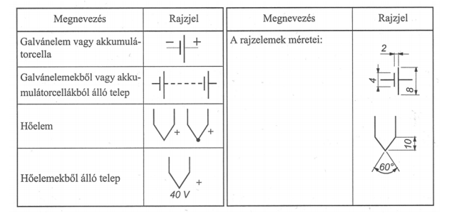
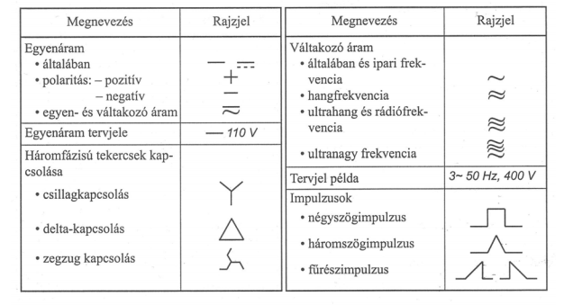
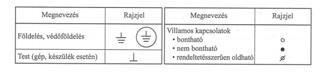
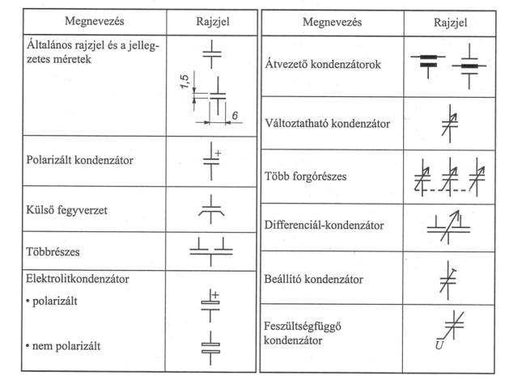
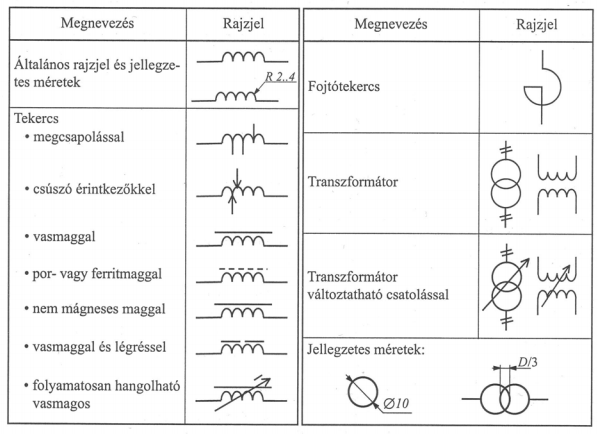
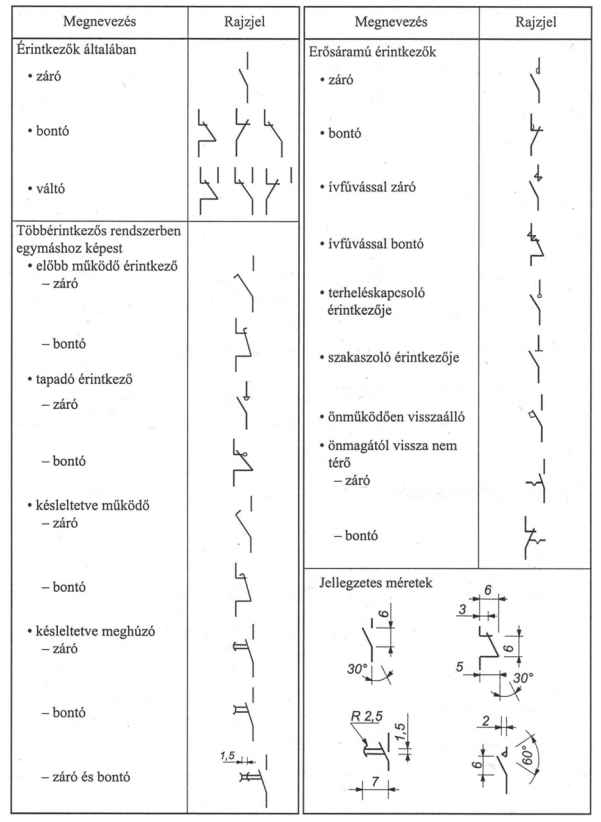
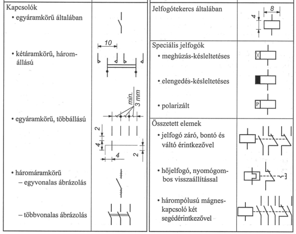
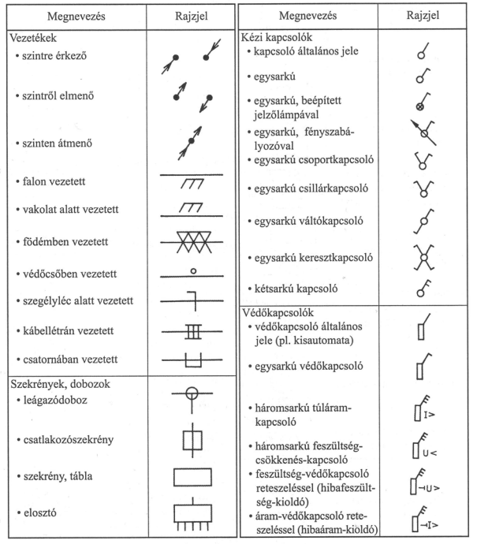
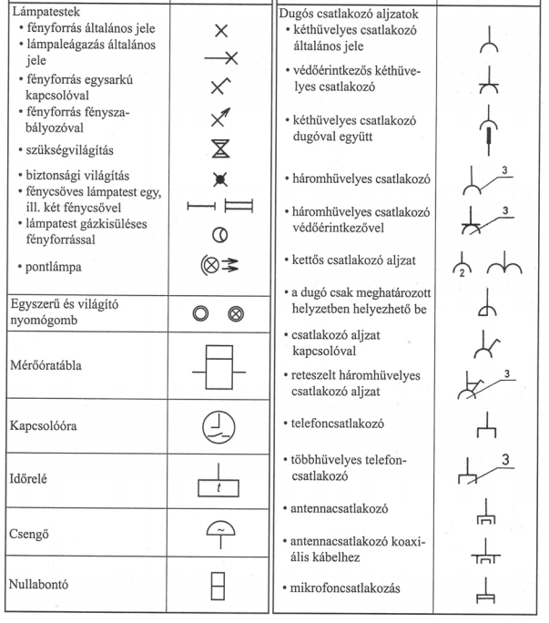

Villamossági rajzjelek
Vezetékek

Áramforrások

Feszültség és áramrendszerek

Villamos készülékek kapocsjelölése

Kondenzátorok

Tekercsek, transzformátorok

Kapcsolók és érintkezők, jelfogók


Világítástechnika és épületvillamosság

